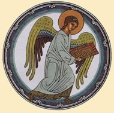
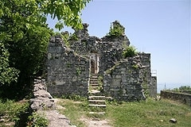
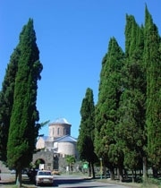
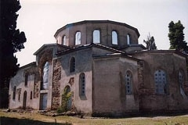
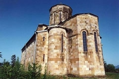

|

История христианства в Абхазии восходит к апостольским временам. Достоверно известно, что здесь проповедовали апостолы Андрей Первозванный и Симон Кананит. Последний, в середине I века, был обезглавлен римскими легионерами в Анакопии (современный Новый Афон), и погребен там же. На месте погребения и сегодня высится древний храм в честь Симона Кананита. Есть сведения и о том, что апостол Матфий (ученик из семидесяти) также вел свою проповедь в Абхазии и был погребен в городе Себастополисе (современный Сухум).
В послеапостольское время христианство проникало в Абхазию через cосланных сюда церковных деятелей, войнов-христиан, государственных чиновников-христиан, оказавшихся в немилости у Римских императоров.
Среди них были: воины-мученики Орентий и его шесть братьев (IV в.),
двое из них - Орентий и Лонгин погребены в Пицунде, один - в Зиганисе
(с. Гудава), священномученик Василиск Команский (IV в.), святитель
Иоанн Златоуст (умер в Команах в 407 году), полководец времен Юстиниана Великого - Бесс и др. В начале IV века в Питиунте (современная Пицунда) возникает епископия, то есть церковная община во главе с епископом Сафронием. Это был первый церковный институт в Абхазии, ставший фундаментом будущей Абхазской Церкви. В 325 году епископ Питиунта Стратофил участвует на I Вселенском Соборе. Его имя фигурирует практически во всех сохранившихся списках участников этого авторитетнейшего Собора. Питиунская епископия была в юрисдикционном подчинении архиепископу Кесарии Каппадокийской (глава Понтийской Церкви) через посредствующего митрополита Неокисарийского. С IV по VII века в Пицунде строится семь базиликальных храмов, в том числе и кафедральная базилика со знаменитой Пицундской мозаикой.
В V веке в Себастополисе (современный Сухум) также возникает христианская община во главе с епископом. Себастопольский епископ Керконий принимает участие в IV Вселенском Соборе. Здесь же в Себастополисе строится октогональная церковь в честь воина-мученика Ореста (IV-V вв.). Имя этого святого стало известно благодаря археологическим раскопкам конца 80-х начала 90-х годов XX века, его не знает остальной христианский мир. В VI веке император Юстиниан Великий с помощью своего главного евнуха Евфрата Абазга завершает процесс христианизации древнеабхазских племен, дает христианское образование абазгским детям, устраивая специальную школу для них в Константинополе; проводит реформирование церковного института в Абхазии. При прямом участии императора создается автокефальная Абазсгская епархия с кафедрой в г. Себастополис (Сухум). Вместо Питиунтской и Себастопольской епископий, единственных христианских общин, имевших во главе епископов, появляется целый ряд епископских кафедр (с кафедральными храмами), объединенных в одну Абазсгскую епархию во главе с архиепископом. Это не была еще автокефальная (независимая), в полном смысле этого слова Абхазская Церковь. Автокефалия, в данном случае, заключалась в независимости Абазсгского архиепископа от митрополита Неокесарийского - архиепископ Абазгский на прямую подчинялся Архиепископу Константинопольскому. Однако это была новая серьезная ступень на пути к созданию Абхазской Церкви. Пицунда с этого времени теряет свое значение как главного христианского центра Абхазии, эстафета будет передана Себастополису (Сухуму).
На основании археологических материалов установлено, что в VI-VII веках в ведении Абазгской епархии, которая в перечне автокефальных епархий Константинопольской Церкви значилась под 34 номером, были следующие епископские кафедры: Цандрипшская, Пицундская, Анакопийская, Себастопольская, Цебельдинская, Гюэносская (Очамчира). Все эти епископии имели кафедральные храмы и храмы-филиалы в разных уголках Абхазии. Самые знаменитые кафедральные соборы этого периода, дошедшие до нашего времени - это Цандрипшская базилика (VI в.) и Драндский собор (VI в.). История сохранила нам имена только двух епископов этого периода: Константина, епископа Цибилиума (пер. пол. VI в.) и Феодора, епископа Питиунтского (VII в.). На юго-востоке Абазгская епархия граничила с Лазской епархией, на северо-западе с Зихской (Адыгской) епархией. Все выше названные епархии тогда входили в состав Константинопольской Церкви. Следует особо отметить роль христианства в прекращении работорговли в Абхазии. С полным утверждением христианства в Абхазии (при императоре Юстиниане в VI веке) продаже не только рабов, но и оскопленных детей был положен конец. Но с упадком христианства в Абхазии через тысячу лет это страшное явление приобрело еще более ужасающие формы.
В VII веке абазги, апсилы и саниги выступают, как всецело христианские племена, а их правители вновь покровительствуют защитникам православной веры, изгнанным византийскими императорами-еретиками. Ученик знаменитого византийского богослова и отца Церкви преподобного Максима Исповедника, святой Анастасий, "пресвитер и апокрисиарий Рима", в середине VII века писал об Абхазии, как о стране "христолюбивых абазгов", а об ее правителях как о "христолюбивых предводителях". В письме упомянут и некий святой Стефан, проповедавший в Абазгии и Апсилии, ниспровергавший ложность учения монфелитов. Святой Стефан умер в доме "христолюбивого правителя Абазгии" и был погребен в Абхазии. Святой Стефан, преп. Максим Исповедник, святой Анастасий и блаженный Анастасий дополнят список святых Абхазской Церкви.
VIII-X века - это период процветания христианства в Абхазии. Все лучшие произведения храмового строительства и церковного искусства прошлого относятся именно к этому периоду. Характерная особенность этого периода - доминирующее влияние самих абхазов на жизнь своей Церкви.
В конце VIII возникает средневековое Абхазское православное царство. Немного раньше возникает и самостоятельная Абхазская Церковь. Возникновение двух этих институтов было взаимосвязано. Устроители Абхазского православного государства ясно осознавали, что их легитимность напрямую связана с созданием Абхазской Церкви. Глава Церкви совершал обряд помазания на царство, соответствующий византийскому императорскому двору.
В середине VIII века предводители Абхазии посылают большую церковную делегацию в Антиохию с целью поставления католикоса, то есть главы Абхазской Церкви. Константинопольская Церковь, защищавшая интересы Византийской империи в Абхазии, никогда не дала бы право на самостоятельность Абхазской Церкви, поэтому делегация была направлена в Антиохийскую Церковь, которая в ходе арабских завоеваний на Востоке, была независима в своих действиях от византийского императора, и от Константинопольского патриарха. Большая часть участников посольства погибла в дороге от рук разбойников. До Антиохии дошли только двое. На Соборе Антиохийской Церкви, возглавляемой патриархом Феофилактом, было решено рукоположить одного из них, абхаза по имени Иоанн, в самостоятельного католикоса, а другого - в епископа. Отныне Абхазская Церковь имела право избирать и рукополагать католикоса собором местных епископов. Этого права не было у иерархов Абазгской епархии. Но абхазские католикосы должны были поминать при богослужении Антиохийского патриарха. Прекращение канонической зависимости от Антиохийской Церкви произойдет, предположительно, в 820 году, при Антиохийском патриархе Иове. По возвращении в Абхазию, католикос Иоанн, первый глава Абхазской Церкви, своей кафедрой избирает Пицунду, а не Себастополис. Последний всегда был и еще долго будет форпостом интересов греческого населения Абхазии и Константинопольской Церкви. Пицунда вернула себе имя главного христианского центра Абхазии и с достоинством продержала его до конца существования Абхазской Церкви.
Возникшая в середине VIII века Абхазская Церковь будет стоять у истоков создания Абхазского средневекового государства. Она будет формировать идеологию этого государства, направляя богатство и мощь абхазских царей и на поддержание непреходящих ценностей среди народа.

С каждым именем правителя тогдашней Абхазии связано строительство и благолепное украшение соборов и храмов, выдающихся архитектурных памятников Кавказа и всего Северного и Восточного Причерноморья. Основная часть этих памятников, а именно Пицундский собор, Бзыбский храм, Лыхненский храм, храм Симона Кананита, Моквский пятинефный собор и храм в Нижнем Архызе, представляют своеобразную абхазскую школу храмостроительства. В XI веке абхазские мастера будут принимать участие в строительстве храмов в Киеве.
В выше перечисленных соборах и храмах еще до XVII века хранилось много святынь. Среди них следует выделить святыни мирового христианского значения. Это один из гвоздей, которым к кресту был пригвожден Спаситель, он хранился в Бедийском храме, там же находилась и часть тернового венца. В Моквском соборе хранилась частица от креста Господня, большая часть мощей первомученика и архидиакона Стефана, частицы мощей святителя Никола Мирликийского, Амвросия Медиоланского и др.
В этот период в богослужебное использование наравне с греческим языком вводится и абхазский язык. Об этом свидетельствует Моравско-Паннонское жизнеописание святого Константина Философа, в монашестве Кирилла, брата св. Мефодия. Св. Константин, выступая в Венеции перед западным духовенством, с защитой права Совершения богослужения на национальных языках, перечислил народы, которые к тому времени уже совершали богослужения на своих языках. В этом перечне упомянуты и абазги. Следует отметить, что речь идет не только об устном использовании абхазского языка, но и создании письменности, предположительно, с использованием греческой орфографии. С именами отдельных абхазских царей, связано распространение христианства среди алан (осетин) Северного Кавказа. За это им - Константину III и Георгию II - была выражена особая благодарность патриархом Константинопольским Николаем Мистиком. История сохранила несколько писем этого патриарха обращенных к вышеназванным абхазским царям.
Абхазская Церковь в этот период вмешивалась в церковную жизнь соседних Крымских народов, готов-тетракситов. Для них, в силу зараженности Константинополя иконоборческой ересью, в Пицундском соборе рукополагается в епископы святой Иоанн Готский. Абхазия в эту эпоху, по-прежнему, принимает гонимых за веру православную: иконопочитателей и преследуемых арабами христиан из Армении и Восточной Грузии. Есть предположение, что именно Команы Абхазские будут укрывать от рук иконоборцев мировую христианскую святыню - честную главу Иоанна Крестителя, третье обретение которой произойдет здесь в середине IX века.
Особенно хотелось бы напомнить еще два важнейших события из истории Абхазской Церкви этого периода, которые должным образом будут отмечены в будущем, в церковном календаре Абхазской Церкви.
Первое - это нашествие арабского полководца Мурвана-ибн-Мухаам-мада в 30-ые годы VIII в., в ходе которого была осаждена столица тогдашней Абхазии - Анакопия. Поражение в битве и поспешное удаление арабов из Абхазии произошло благодаря заступничеству Пресвятой Богородицы, явившей в ночь перед сражением свой нерукотворный образ - Анакопийской Богоматери. За ночь от кровяной холеры погибло 35.000 арабов. Не будет преувеличением, если это Анакопийское сражение мы сравним со знаменитым сражением Карла Мартелла с арабами при Пуатье. Как при Пуатье в 732 году была предотвращена опасность дальнейшего продвижения арабов на север Европы, так и под Анакопией было остановлено их продвижение на Кавказ.
Грузинам, беспочвенно обвиняющим сегодня абхазов в приверженности к радикальному исламу, следует не забывать историю. Стены Анакопийской крепости тогда сокрыли от рук Мурвана Глухого не только абхазов, но и грузин во главе с царем Арчилом и его братом Миром, бежавших из опустошенных Картли и Эгриси. Позднее в 778-80 годах Анакопия вновь примет правителя Картли Нерсеса вместе с семьей и поданными, который также бежал от арабов. В числе подданных Нерсеса был и мученик Або, арабский юноша, принявший веру Христову, который, уходя, скажет правителю Абхазии: "Что за радость быть в Абхазии, где нет даже опасности умереть за имя Господа Иисуса Христа".
К сожалению, Анакопийская икона Богородицы утеряна. Помимо нее, самыми почитаемыми иконами в Абхазии были: Пицундская икона Богоматери (две из них сегодня находятся в Тбилиси, одна - в Бачковском монастыре в Болгарии и является одной и самых чтимых икон Болгарской Православной Церкви), икона абхазского царя Леона III, Качьская икона архангелов Рафаила и Серафима и др.
Второе событие - это мученичество святого Евстафия Апсильского. Мученик Евстафий был первым абхазцем, святость которого признавалась всей Восточной Церковью. Он, в 738 году, будучи правителем Апсилии, был пленен арабским полководцем Сулейманом ибн-Исамом. В 740 году святой Евстафий мученически пострадал в городе Харане, где впоследствии от его мощей происходили чудеса и исцеления. Как это ни прискорбно, но об этом святом Абхазской Церкви, в честь которого должны быть воздвигнуты храмы, как в его родной Цебельде, так и во многих местах Абхазии, сегодня ничего не знают большинство его соотечественников.
В конце X века происходит смена династий на престоле Абхазского царства, которое станет началом создания объединенного средневекового "царства абхазов и картвелов". Это государство просуществовало три века. Вместо греческого и абхазского языков в богослужение вводится грузинский язык, хотя есть сведения о локальном употреблении и абхазского, и греческого вплоть до XV века. В институте рукописей имени К. С. Кекелидзе в Тбилиси и сегодня хранятся два напрестольных Евангелия на древнегрузинском языке XIII века. Одно из них из Пицундского собора, второе из Моквского собора. Судьба еще одного богослужебного Евангелия и Псалтири XI века из Моквского храма, хранившихся в начале XX века в Мартвильском монастыре, неизвестна. При участии Восточно-Грузинской Церкви постепенно идет этническая замена епископата, все меньше и меньше мы в истории будем встречать епископов-абхазов или греков. Известно имя только одного Абхазского католикоса этого периода, католикоса Николая (приблизительно вторая половина XIII века), правда, в летописях упомянуты и другие Абхазские католикосы только без имен. Территория Абхазской Церкви или Католикосата охватывала, как и в предшествующий период, всю Абхазию и Западную Грузию.
В XI веке Анакопия оказалось в руках греков. В это время перестраивается Анакопийской храм. Он был освящен в честь мученика Феодора Тирана. Следует отметить, что знаменитый монастырь Иверон на Святой горе Афон, расцвет которого приходится на этот период, был монастырем абхазо-картвельского объединенного государства. Участие в жизни монастыря принимали ни только грузины, но и абхазы. По некоторым сведениям, один из настоятелей этого монастыря был абхазом по происхождению. Нерешен вопрос и этнической принадлежности средневекового христианского мыслителя Иоанна Петриция, которого некоторые исследователи считают абхазом, отождествляя его с "грамматиком Абазгом", упомянутого в сочинениях известного византийского философа XI века Иоанна Италы.

В XIII-XV веках Абхазия находилась в сфере политико-экономического влияния Генуи, которая основала на Черноморском побережье целый ряд торговых факторий. Генуэзские торговцы привлекли внимание к этим местам представителей католических монашеских орденов. Правда, католическая миссия в Абхазии была безуспешной, хотя она оставила довольно значительный след в религиозных традициях, культуре абхазов и других народов Кавказа. К примеру, столь популярный среди абхазов, праздник старого нового года - католического происхождения. Здесь же следует сказать, что миссионерская деятельность католической церкви активизировалась, правда вновь безуспешно, во второй половине XVI и XVII веках.
В конце XIV века, а именно в 1390 году, на Пицундский престол был возведен католикос Арсений. В русской церковно-исторической науке эта дата стала официально признанной датой образования Абхазской Церкви. Есть сведения, что и Константинопольская Церковь, именно в этом году, признала Абхазскую Церковь самостоятельной и независимой от Константинопольского Патриархата. Католикос Арсений, уроженец Западной Грузии, оказался на престоле абхазских католикосов благодаря военному походу мегрельского владетеля Вамека Дадиани на Джигетию (Адыгею) и Абхазию в 1390 году. Католикос Арсений и все его последующие преемники по кафедре были выходцами из имеретинских и мегрельских знатных фамилий. С этого времени абхазы были лишены возможности занимать не только кафедру католикоса, но и любую епископскую кафедру. Истории, во второй половине второго тысячелетия, известно имя только одного епископа-абхаза, это митрополит по фамилии Чачба (Шервашидзе), и тот занимал кафедру за пределами Абхазии.
В XIV веке вновь расписываются несколько храмов в Абхазии. Особо стоит выделить сохранившиеся фрески Лыхненского храма и Пицундского собора. Практически утеряны уникальные фрески Моквского, Бедийского, Симона Кананитского и Драндского храмов.
В середине XV века пал Константинополь. Через год после падения Константинополя, в 1454 году, турецкий флот захватил город Себастополис (Сухум). С этого времени начинается постепенный упадок христианства в Абхазии, одновременно идет процесс проникновения ислама, в основном среди знати. Существенно позиции ислама усилятся только в начале XIX века, с появлением, как ни парадоксально, христианской России на Кавказе.
В это же время происходит миграция части населения Абхазии на Северный Кавказ. Окончательного ответа на вопрос, что же побудило абазинов переселиться с прибрежных районов Абхазии за Кавказский хребет, пока нет. Однако следует указать и на то, что определенно прослеживаются и религиозные мотивы. Переселение началось с момента появления турок-мусульман в Абхазии и было связанно с попыткой сохранения христианской веры. Родоначальником известной на всем Северном Кавказе многочисленной фамилии Иуан (Ионовы) был переселившийся из Абхазии православный священнослужитель Анакопийского храма Симона Кананита - Иоанн Алшунба.
Во второй половине XVI века произошло перенесение кафедры абхазских католикосов из Пицунды в Гелатский монастырь в Западной Грузии. С этого времени католикосы будут именоваться "католикосами Абхазскими и Имеретинскими", с XVII века "Имеретинскими и Абхазскими". До перенесения кафедры Абхазскую Церковь возглавляли: католикос Иоаким (между 1470-1474 гг.), Малахия I (между 1519-1533 гг.) и Евдемон I (1557-1578). При последнем католикосе, как мы уже сказали, кафедра переносится в Гелати. Среди историков указывалось несколько причин, повлиявших на перенесение кафедры из Абхазии в Западную Грузию. Главная причина, на наш взгляд, заключается в том, что выходцы из Западной Грузии, захватившие с помощью правителя Мегрелии престол абхазских католикосов в 1390 году, не позволяли взойти на него представителю абхазского народа. Отсюда вытекают следующие последствия, ставшие причинами удаления католикосов из Абхазии. Во-первых, народ абхазский отдаляется от Церкви, потому что там служат на чужом языке; и чужое духовенство, привозимое католикосом из Западной Грузии, не понимало в свою очередь или не хотело понимать чаяний основной массы прихожан, являвшихся абхазами. За отдалением от Церкви, естественно, происходит упадок христианских устоев среди абхазов. Во-вторых, не прекращавшиеся междоусобицы между владетелями Абхазии и Мегрелии всегда ставили католикосов, этнических грузин, в сложное положение, вплоть до угрозы их физического устранения. Абхазские владетели были в этот период всегда на стороне христианства, но не на стороне христианства, используемого через католикосов мегрельскими владетелями в своих политических и экономических расчетах. Всего этого не было бы, если бы католикосы, кафедра которых находилась во владении абхазских владетелей, были бы этническими абхазами. Не прекратившаяся, и в дальнейшем, распря между Абхазией и Мегрелией, стала также одной из главных причин, не позволившей Абхазским католикосам, впоследствии вернуться в Пицунду. Они остались навсегда в "Авиньонском пленении". Правда, учитывая значимость Пицунды, колыбели Абхазской Церкви, католикосы периода "имеретинского пленения", до конца XVII века, приезжали в Пицундский собор варить Святое Миро.
После католикоса Евдемона I Абхазскую Церковь возглавляли следующие католикосы:
1. Евфимий (1578 - 1605 гг.)
2. Малахия II (1605 - 1629 гг.)
3. Григорий I (1629 - 1639 гг.)
4. Максим I (1639 - 1657 гг.)
5. Захария (1656 - 1659 гг.)
6. Симеон (1659 - 1666 гг.)
7. Евдемон II (1666 - 1673 гг.)
8. Давид (1673 - 1696 гг.)
9. Григорий II (1696 - 1742 гг.)
10. Герман (1742 - 1751 гг.)
11. Виссарион (1751 - 1769 гг.)
12. Иосиф (1769 - 1776 гг.)
13. Максим II (1776 - 1795 гг.)
Последний Абхазский католикос, Максим II, из княжеской фамилии Абашидзе, был вынужден уехать на жительство в Россию из-за политических разногласий с имеретинским царем Давидом. Католикос тяготел к России и в союзе с ней он видел спасение Имеретинского государства. Царь Давид напротив думал о политической самостоятельности своего государства, используя поддержку Турции. По дороге в Палестину католикос Максим II в 1795 году скончался в Киево-Печерской Лавре. Со смертью этого католикоса прекратила свое существование Абхазская Православная Церковь. Местоблюстители кафедры абхазских католикосов: митрополит Досифей и митрополит Евфимий, в 1819 году будут так же удалены, правда, уже российскими властями, из Имеретии.
О церковной жизни в Абхазии в XVII-XVIII веках, известно, что все храмы, главным образом в Гудаутской части, еще в начале XVII века, приходят в запустение. В Абжуйской части в XVII веке встречаются имена епископов Драндской, Моквской и Бедийской епархий. Но вскоре и храмы этих епархий подвергнутся разграблению и будут подожжены турками-мусульманами.

Нельзя отрицать значение исламской культуры в жизни многих народов, но факт остается фактом, под влиянием исламской Турции Абхазия переживала небывалый культурный упадок. На протяжении XVI-XVIII веков на территории Абхазии практически не создано ни одного архитектурного памятника, который по своей художественной значимости встал бы в один ряд с памятниками предшествующего времени. Особо следует выделить значения Елорского храма в этот период. В XVII веке здесь происходит удивительное событие, связанное со святым Георгием Победоносцем. Это - чудесное явление жертвенного быка в день памяти святого Георгия в ноябре месяце, когда сюда стекалось огромное количество народа со всего Кавказа. Исходя из слов Антиохийского Патриарха Макария III, побывавшего здесь в середине XVII века, мы можем сравнить это чудо с чудом благодатного нисхождения огня на Пасху в Иерусалиме. Иерусалимское чудо появилось тогда, когда была опасность уничтожения арабами-мусульманами святынь Иерусалима, и оно, это чудо, вызывавшее уважение со стороны арабов, действительно спасло христианские святыни от поругания и уничтожения. Точно также Елорское чудо появилось тогда, когда была опасность полного уничтожения турками-мусульманами христианских святынь Абхазии, и оно, это чудо, не позволяло туркам-мусульманом погасить последнюю лампаду христианской Церкви в Абхазии.
В 1732-33 годах святой Георгий, явившись в стане абхазского воинства во главе которого стоял Манча (Манучар) Чачба, вдохновит их и вместе с ними вступит в сражение с войсками турецкого паши и его союзника имеретинского царя Александра. Символы этой победы - два маленьких кинжала, взятых св. Георгием, и на утро найденных на его иконе в храме. Еще до конца XIX века в Елорском храме эти реликвии были живыми свидетельствами чудесного события.
По всей вероятности, к этому периоду относится и жизнь преподобного Ипатия Гагрского. Этот святой Абхазской Церкви из рода Званба, подвизался в пещере, в ущелье горы Мамзышьха. Видимо, после кончины, он был погребен в Гагрском храме в Абатаа, поскольку его имя во многих источниках увязывается с этим храмом. После того, как крепость, в которой располагается церковь св. Ипатия, была занята русским гарнизоном, имя этого святого стали отождествлять с именем св. Ипатия, епископа Гангрского. Но это неверно. Св. Ипатий Гагрский и св. Ипатий, епископ Гангрский - это два совершенно разных лица, не имеющих между собой ничего общего, кроме сходства имен.
В XVII веке в процессе упадка христианства происходит метаморфоза христианства в языческую религию абхазов. Другими словами, современное язычество абхазов - есть искаженное христианство, требующее некоторого восполнения. Этот процесс шел следующим образом. С XIV века, как мы уже говорили, абхазский народ был лишен возможности иметь епископов из своей среды. Последнее обстоятельство привело к тому, что когда из-за распрей между владетельными князями Абхазии и Мегрелии, католикосы покинули Абхазию, абхазы практически остались без архипастырей, т. е. сложилась ситуация, которая наблюдается и в наше время. Сухумский епископ, по происхождению грузин, уроженец города Тбилиси, в ходе войны 1992-1993 годов, бросает свою паству и уезжает в Грузию. Епархия, лишенная епископа, лишается и возможности рукоположения священников для абхазского народа.
Дальнейший ход событий в XVII был таков. После того, как в преклонных годах умирали оставшиеся со своим народом священники из абхазов, их функции стали выполнять их дети, так называемые "самозваные священники", которых абхазские ученые - историки и этнографы - в XX веке окрестили жрецами. Одновременно идет процесс трансформации и запустевших храмов, которые постепенно превращаются в языческие святилища. И такие, совершенно христианского происхождения, праздники, как Старый Новый год, Нанщъа, Хъажъкыра, или обряд моления о дожде "Ацуныщъа" становятся языческими.
В 1810 году Абхазия входит в состав Российской империи. В первой половине XIX века, из-за не прекращавшейся Кавказской войны, церковная жизнь в Абхазии была практически парализована. В это время мы имеем всего три действующих храма - это Пицундский, Лыхненский и Елорский. Во второй четверти XIX века Пицундский и Лыхнеский храмы перестают функционировать. При императоре Николае I была попытка создания епархии на территории Абхазии. Кафедру этого епископа предполагалось разместить в Лыхненском храме. Настоятель Цагерского монастыря, иеромонах Антоний (Дадиани), родной брат жены абхазского владетеля Михаила Чачба, был рекомендован последним в качестве ставленника на кафедру Абхазской епархии. С этой целью иеромонаха Антония возвели в сан архимандрита. Однако кафедра не была открыта.
В 1851 году на территории Абхазии открывается епархия. Эта епархия официально именовалась "Абхазской" и была включена в состав Грузинского Экзархата Русской Православной Церкви. Просуществовала Абхазская епархия до 1885 года.
Епископы Абхазской епархии:
1. Геронтий (1851-1856).
2. Герман (1856).
3. Александр (1856-1869).
4. Гавриил (1869-1885).
Епископу Гавриилу, возглавлявшему Имеретинскую кафедру в 1869 году было поручено одновременно управлять и Абхазской епархией. Все выше названные епископы были выходцами из Грузии, все они, за исключением епископа Гавриила, мало заботились о возрождении христианства в Абхазии. Абхазские епископы, не имея кафедрального храма и здания для управления епархией, жили при резиденции владетельного князя Михаила Чачба, летом в Лыхнах, зимой в Очамчирах.
В период правления епископа Гавриила идет процесс массового крещения абхазов, открываются новые приходы. "Обществом восстановления православного христианства на Кавказе" строятся несколько храмов в абхазских деревнях. Появляется первые представители абхазского духовенства. Особо стоит выделить настоятеля Лыхненского храма, священномученика Иоанна Гегиа. Уроженец села Лыхны, отец Иоанн один из ярких церковных деятелей Абхазии во второй половине XIX века. Он участвует в переводе на абхазский язык первой религиозно-церковной книги под названием "Краткая Священная история", вышедшая в 1866 году. Отец Иоанн стоял у истоков возрождения абхазского богослужебного языка. Но, жизнь его оборвалась трагически. Во время русско-турецкой войны, 1976-77 годов, отец Иоанн активно призывал своих односельчан и соотечественников - не переселяться в Турцию, говорил о том, что их обманывают, и что в Турции их ждет страшная судьба. Его слова оказались пророческими. 5 августа 1877 года он был задушен в Лыхненском храме своими же соотечественниками-мусульманами. Сегодня имя этого человека чтится как имя святого Абхазской Церкви, и надеемся, что недалек час официального его прославления.
В 1875 году положено начало известного во всем православном мире Ново-Афонского Симона-Кананитского монастыря. Этот монастырь создавался как место, куда, в случае захвата греками Русского Пантелеймоновского монастыря на Святой горе Афон (Греция), могли переселиться русские монахи. Вместе с тем наместник Кавказа и местное церковное начальство думали и об использовании афонских монахов в деле просвещения абхазов. В 1976 году одновременно с храмом Покрова Богородицы, в Новом Афоне откроется и монастырская школа для абхазских мальчиков. Монахи в 1882 году восстановят храм Симона Кананита. В течение 30 лет в Новом Афоне будет выстроен огромный монастырь с центральным собором на 3000 человек, с крупным подсобным хозяйством, с собственной гидроэлектростанцией и многими другими постройками. В начале XX века, среди 500 братии монастыря были и двое монахов-абхазов.

В 1872 году был издан указ об открытии миссионерского монастыря при Пицундском соборе. Однако из-за пассивной деятельности монахов Троице-Сергиевой лавры, направленных в Пицунду, монастырь был вскоре закрыт. В 1885 году Пицундский собор перешел в ведение Ново-Афонского монастыря в качестве скита, и в том же году он был освящен в честь Успения Богородицы, хотя в древности он всегда именовался в честь апостола Андрея Первозванного. В начале XX века там проживало до 80 монахов.
В 1885 году происходит реорганизация Абхазской епархии. С этого времени епархия будет именоваться "Сухумской". В ее состав войдет часть территории, расформированной Кавказской епархии. С 1885 до 1918 года территория Сухумской епархии будет простираться от реки Ингур до Анапы.
Епископы Сухумской епархии:
1. Геннадий (1886-1889).
2. Александр (1889-1891).
3. Агафодор (1891-1893).
4. Петр (1893-1895).
5. Арсений (1895-1905).
6. Серафим (1905-1906).
7. Кирион (1906-1907).
8. Димитрий (1907-1911).
9. Андрей (1911-1913).
10. Сергий (1913-1918).
Все выше перечисленные епископы, за исключением епископа Кириона, были русскими. Все они имели прекрасное образование, были выпускниками духовных академий, многие из них были кандидатами богословских наук. Особой любовью и уважением среди абхазов пользовались епископы - Геннадий (Павлинский) и Агафодор (Преображенский). Епископ Серафим (Чичагов), впоследствии известный иерарх, на архиерейском соборе Русской Церкви в 1997 году будет причислен к лику священномучеников. Самый одиозный из всех Сухумских епископов, епископ Кирион (Садзгелашвили), после революции будет избран первым католикосом автокефальной Грузинской Церкви. Через год при странных обстоятельствах он будет убит. При его времени правления Сухумской епархией, шел усиленный процесс огрузинивания абхазов. Он назначал в абхазские приходы священников-грузин, с которыми абхазы должны были общаться на исповеди через переводчика.
К 1917 году Сухумская епархия имела 125 приходских храмов: 61 абхазских, 36 русских, 16 греческих, 4 мингрело-грузинских и 8 смешанных, то есть русско-греческих и русско-мингрельских. Епархия имела два крупных мужских монастыря: Ново-Афонский Симона-Кананитский (основан в 1875г.) и Успенский Драндский. Драндский монастырь был основан так же афонскими монахами в 1880 году. Настоятелями этого монастыря были епископы Сухумские. При монастыре была своя типография и церковно-приходская школа для абхазских детей. Монастырь имел два скита в окрестностях Дранды и подворья в Сухуме, Екатеринодаре, Новороссийске и Ейске. Число насельников достигало до 300 человек. Епархия имела и два крупных женских монастыря: Моквский Успенский монастырь и Команский Василиско-Златоустовский монастырь. Команский женский монастырь основан в 1898 году, число сестер достигало до 300 человек. Моквский монастырь был основан в 1902 году. Оба монастыря вели крупную хозяйственную и образовательную деятельность.
В начале XX века появляется целое поколение образованного абхазского духовенства. Это протоирей Дмитрий Маан, священник Николай Ладариа, священник Иосиф Лакербая, священник Илларион Кучуберия, священник Александр Ажиба, священник Николай Патейпа, священник Георгий Туманов и др. Они активно участвуют в работе переводческой комиссии. Благодаря плодотворной работе этой комиссии, на абхазском языке будут изданы: Богослужебное Евангелие, Литургия св. Иоанна Златоуста, Богослужебный сборник, Требник, нотный обиход абхазских литургических песнопений и другая житийная и нравственно-назидательная литература. 6 ноября 1907 года в Лыхненском храме состоялась первая служба на абхазском языке. Помимо духовенства в ней приняли участие и видные абхазские общественные деятели. Символ веры прочитал Дмитрий Иосифович Гулиа, впоследствии основоположник Абхазской литературы, который так же принимал участие в работе переводческой комиссии. 13 ноября того же года аналогичное богослужение прошло и в Моквском соборе. Выше названное абхазское духовенство было серьезно занято и делом просвещения абхазского народа. Они создавали церковно-приходские школы в абхазских деревнях. В начале XX века в Абхазии функционировало до 100 церковных школ. Многие выпускники этих школ стали впоследствии видными общественными, культурными и политическими деятелями Абхазии. Дмитрий Гулиа осваивал грамоту у священника Адзюбжинского храма, Самсон Чанба учился в Драндской монастырской школе, Нестор Лакоба - в Ново-Афонской монастырской школе.
После февральской революции 1917 года, была провозглашена автокефалия Грузинской Церкви, то есть независимость Грузинской Церкви от Русской Церкви. Через два месяца, в мае 1917 года, большая грузинская делегация прибыла в Абхазию, провести переговоры о присоединении абхазских приходских храмов к Грузинской Церкви. Абхазское духовенство и общественность отказались от предложений грузинской делегации. В конце мая в Сухуме был организован съезд духовенства и выборных мирян абхазского православного населения Сухумского округа. Съезд, вновь отвергнув предложения представителей Грузинской Церкви, вынес решение объявить Абхазскую Церковь автокефальной и считать епископом автокефальной Абхазской Церкви - Сергия (Петрова), епископа Сухумского. Это решение было сообщено по телеграфу Святейшему Синоду Всероссийской Церкви. Св. Синод через два месяца ответил на имя князя Александра Чачба, что абхазский церковный вопрос будет рассмотрен Поместным собором Всероссийской Церкви, который откроется 15 августа 1917 года. До решения собора необходимо сохранять существующее епархиальное управление, то есть церковным институтом на территории Абхазии остается Сухумская епархия Русской Церкви, а не Абхазская самостоятельная Церковь. Абхазы с этим предложением согласились.
В августе 1917 года открылся Поместный Собор Православной Российской Церкви. Восемнадцатый отдел этого собора должен был рассматривать вопрос устройства Православной Церкви в Закавказье, в том числе и решение абхазского церковного вопроса. От Сухумской епархии на соборе принимало участие 4 человека, во главе с епископом Сухумским Сергием. Представители абхазского духовенства, к сожалению, на собор не попали. Протоиерей Дмитрий Маан, который должен был быть представителем епископа Сухумского Сергия, после возвращения последнего в сентябре 1917 года в Абхазию, по каким то причинам был заменен протоиреем Георгием Голубцовым.
Протоиерей Георгий Голубцов предлагал на заседаниях 18 отдела Собора и лично вновь избранному патриарху Тихону, с которым он встречался дважды, решить абхазский церковный вопрос следующим образом: переименовать Сухумскую епархию в "Абхазскую", выделить ее из состава Грузинского Экзархата Русской Церкви, и сделать ее самостоятельной епархией в составе Русской Церкви, с сохранением за ней территории от Ингура до Анапы. Иначе, по словам о. Георгия Голубцова, грузинские автокефалисты откроют свою Цхумо-Абхазскую епархию на территории Абхазии. Подобное предложение было согласовано с абхазским духовенством и представителями общественности Абхазии. Предложение было одобрено святейшим патриархом Тихоном. Однако случилось то, чего более всего опасался о. Георгий Голубцов.
Летом 1918 года Абхазия оказалось оккупирована грузинскими меньшевиками. Вслед за этим Грузинская Церковь открывает на канонической территории Сухумской епархии свою Цхумо-Абхазскую епархию. Возглавил эту епархию - епископ Амвросий (Хелая). С этого времени, по сути, прекратила свое существование Сухумская епархия, хотя еще до конца 30-х годов для нее тайно рукополагались епископы. Эти епископы реально не имели никакой власти, они окормляли небольшое количество "тихоновских" приходов (так они тогда называли себя).
После епископа Амвросия (Хелая) Сухумо-Абхазскую епархию, непризнанной тогда еще Грузинской Церкви, возглавляли следующие епископы:
1. Иоанн (1921-1925).
2. Христофор (1925-1927).
3. Ефрем (1927).
4. Мельхиседек (1927-1928).
5. Павел (1928).
6. Варлаам (1929-1934).
7. Мелхиседек, второй раз (1935-1943).
Все эти епископы были этническими грузинами. Реальной силой и властью они не обладали, поскольку Советская власть к тому времени почти уничтожила Православную Церковь в Абхазии. К 1924 году были закрыты все монастыри Сухумской епархии и большинство приходов. Почти все духовенство и монашество было расстреляно или заключено в лагеря. Среди репрессированного духовенства особо следует выделить имя настоятеля Сухумского кафедрального собора (собор был взорван в 1937 году) - священника Елизбара Ачба, новомученика Абхазской Церкви. Готовятся материалы для канонизации этого человека. К концу 30-х годов XX века не осталось ни одного священника абхаза.
В 1943 году Русская Церковь, через 25 лет, признала независимость Грузинской Церкви и возобновилось молитвенно-каноническое общение с нею. В 1943 году последние приходские храмы на территории Абхазии, не подчинявшиеся до этого грузинским автокефалистам и именовавшие себя "тихоновцами", были окончательно переданы Русской Церковью Грузинской. Таким образом, антиканонический акт грузинских автокефалистов - открытие Сухумо-Абхазской епархии Грузинской Церкви на канонической территории Сухумской епархии Русской Церкви в 1918 году - через 25 лет был узаконен. Разумеется, в 1943 году абхазский народ об окончательном, юридическом акте передачи храмов и монастырей Абхазии в ведение Грузинской Церкви никто не спрашивал.
После Второй мировой войны, Сухумо-Абхазскую епархию возглавляли:
1. Антоний (1952-1956).
2. Леонид (1957-?).
3. Роман (?-1967).
4. Илия (1967-1977).
5. Николай (1977-1983).
6. Давид (1983-1992).
7. Даниил (1992-1993).
Все эти епископы, за исключением епископа Антония, были присланы из Грузии. Наиболее известны двое: епископ Илия (Шилошвили), ныне глава Грузинской Церкви и епископ Давид (Чкадуа), впоследствии митрополит, активный участник экуменического движения. При епископе Антонии греческая церковь города Сухум была передана Сухумо-Абхазской епархии.
Этот храм стал кафедральным, таковым и остается до сегодняшнего дня. В этот период у Сухумо-Абхазской епархии не было ни одного монастыря. На всей территории Абхазии функционировали всего шесть храмов: Сухумский кафедральный собор, Сухумская кладбищенская церковь, Елорский храм, Лыхнеский храм, Гагринская Покровская церковь и Гудаутская Покровская церковь. Последние две церкви (частные дома, переделанные в храм) были открыты после Второй Мировой Войны. Количество духовенства не достигало и 10 человек. Духовенство было в большинстве русское. Только при митрополите Давиде (Чкадуа), в конце 80-х годов, грузинского духовенства стало больше. Во время хрущевских гонений на Православную Церковь горы Абхазии становятся пристанищем монахов из разных уголков СССР. Пустынножители в Абхазских горных районах появились еще в конце XIX века. Небольшие монашеские общины в Цебельде, Азанте, Амткеле, Двуречии, Псху стали подлинными духовными центрами для всех православных людей Советского Союза. Многие из тех, кто тайно посещал эти общины, для получения духовного наставления впоследствии стали известными иерархами Русской Церкви, настоятелями монастырей, священнослужителями, профессорами Духовных Академий.
В период перестройки, это время правления митрополита Давида (Чкадуа), были задействованы еще несколько храмов, в том числе и храм св. Иоанна Златоуста в Команах. В это время митрополит Давид и грузинское духовенство Сухумо-Абхазской епархии принимает активное участие в политических акциях, устраиваемых грузинскими националистами и "звиадистами", причем эти акции часто проходили во дворе Сухумского кафедрального собора. Такое поведение грузинского духовенства Сухумо-Абхазской епархии отторгало абхазский народ от Церкви.
В начале 90-х годах появляются первые священники абхазы: священник Захария Шакая (рукоположен в Средней Азии) настоятель Ткварчельской церкви в честь иконы "Скоропослушницы" и священник Виссарион Аплиаа, настоятель храма Симона Кнанита на Новом Афоне.
Духовенство Сухумо-Абхазской епархии из числа грузин было на стороне тех, кто в 1992 году ввели танки в Абхазию и развязали войну. Митрополит Давид (Чкадуа) в августе 1992 года вместе с Э. А. Шеварднадзе на площади у здания Совмина Абхазии приветствовал захват города Сухума грузинскими бандформированиями. Через несколько дней после выступления по телевидению, где митрополит Давид призывал грузин к войне с абхазами, он скончался в Тбилиси при неизвестных обстоятельствах.
После смерти митрополита Давида в Сухум был прислан архиепископ Даниил (Датуашвили), который, как и его предшественник, продолжал вдохновлять грузинских "ратников" в войне с абхазским народом. После освобождения абхазскими войсками города Сухума в сентябре 1993 года архиепископ Даниил вместе с грузинским духовенством бежал в Грузию (оставив христианскую паству Абхазии на произвол судьбы), где он до сих пор номинально носит титул епископа Сухумо-Абхазской епархии. В Тбилиси митрополит Даниил - активный участник всех мероприятий, проводимых так называемым "Правительством Абхазской автономной республики в изгнании". Он также участвует во всех грузино-российских церковных мероприятиях в качестве главы Сухумо-Абхазской епархии.
После бегства грузинского духовенства в Абхазии осталось четыре священника: священник Виссарион Аплиаа, служивший во время войны в Гудаутской церкви; протоиерей Петр (Самсонов), настоятель Лыхненского храма; священник Павел (Харченко), служащий священник Гагрского храма; игумен Виталий (Голубь), служащий священник Сухумского кафедрального собора. В конце 1993 года вышеназванные священнослужители избрали из своей среды священника Виссариона Аплиаа настоятелем Кафедрального собора города Сухума и представителем Сухумо-Абхазской епархии во взаимоотношениях с государством и Русской Православной Церковью.
В 1998 году был создан Епархиальный Совет Сухумо-Абхазской епархии. На первом заседании Совета в том же году был принят Устав Епархии и избран управляющий Епархиальным Советом Сухумо-Абхазской епархии священник Виссарион Аплиаа. В послевоенный период на территории Сухумо-Абхазской епархии было открыто несколько храмов и монастырей. В 1994 году открыт Новоафонский монастырь, в 2001 году Команский монастырь. С 2002 года функционирует Новоафонское духовное училище. Число абхазского духовенства пополнилось молодыми образованными иеромонахами. Возобновлено богослужение на абхазском языке.
|